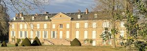
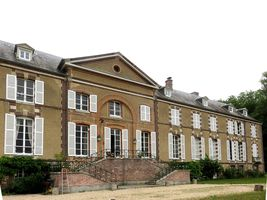

Recensement Jean-Claude Truffet
| Département | 28 — Eure-et-Loir |
| Canton | Dreux |
| Commune | Garnay |
| Type d'édifice | Château |
| Période d'origine | XVIII-XIX |


MARMOUSSE, en 1540, le fief est détenu par François de Boulchard avant de passer en héritage à sa sur Antoinette, son mari, Guillaume de Lambert, seigneur du Chesnay, de la Fosse aux loups, de Chailloy et de Garnay, de 1557 à 1566. En 1568, le seigneur est Urbain de Nancelles, seigneur de la Fosse et de Mormoulins, époux de Jacqueline de Fontaines, dame de Chaudon, dont il a un fils, Charles, écuyer et sieur de Marmousse. En 1615, la seigneurie est cédée à Messire René Sain de Bois-Le-Comte, seigneur de Rochefort, Grand Audiencier en 1622, Après sa mort à Turin, la seigneurie est acquise par Jacques de Guillon, seigneur de Richebourg, qui meurt en 1647. La seigneurie de Marmousse revient à son fils Antoine en 1650. Il a épousé en 1645 Marie dEstrappes, leur fils Léonard baptisé le 5 juin 1653 à Garnay, ils ont deux filles, Barbe et Françoise-Marguerite. La sur de Léonarde a épousé son cousin Marcellin de Guillon, seigneur de Menetou-Couture. Cest donc à lui quéchoit la vente de la seigneurie de Marmousse acquise, le 15 juin 1714, par Michel-Jacques Lévy et sa femme Marie-Elisabeth Hallé. La seigneurie de Marmousse et Chambléan est vendue le 26 janvier 1719 à Vincent Maynon dInvault (1668-1736) Le jeune Vincent Maynon a épousé le 16 août 1699, la fille cadette de Jules Hardouin-Mansart. De cette union naissent trois fils entre 1716 et 1721: Vincent-Michel, Guillaume-François et Etienne, la famille Maynon, en la personne dÉtienne dInvault, arrêté et emprisonné avec sa femme, aucun des trois frères nayant de descendance. leurs seules héritières sont Mme Bouvard de Fourqueux et Pauline de Lamoignon Malesherbes.
MARMOUSSE, Le 9 avril 1807, elles aliènent la seigneurie, à M. Jean-Baptiste Tourteau de Septeuil. Parvient ensuite par héritage à son gendre Charles-Auguste du Bouëxic de Pinieux (1779-1851) qui a épousé, le 19 mars 1808, Constance-Stéphanie Tourteau de Septeuil. Sous la Restauration, le comte de Pinieux occupe différentes fonctions : maire de Garnay en 1814, conseiller général et député dEure-et-Loir de 1824 à 1830. Il meurt en son château le 16 octobre 1851.Le domaine passe alors à son gendre, le baron Nicolas-Auguste Graillet, baron de Beine. Le 24 mars 1887, Marmousse revient au vicomte Adolphe Odoard Le Rebours, époux dAlix-Marie-Charlotte, fille unique du précédent. Ce dernier est propriétaire dun château, celui de Coolus dans la Marne, localité dont il est maire entre 1871 et 1879 et entre 1884 et 1896. En 1903 François Thureau-Dangin (1872-1944). Le novembre 1902, la propriété est mise en vente et acquise en 1905 par François Thureau-Dangin. Toujours dans cette famille. Le château actuel est composé dun long corps de logis de deux étages, flanqué dun pavillon à chaque extrémité. Les deux façades sont semblables: le corps central est surmonté dun fronton triangulaire percé dun oculus, caractéristique du XVIIIe siècle. Sous la corniche, un arc de briques en plein cintre englobe la porte dentrée. On accède à létage noble, matérialisé par ses hautes fenêtres et sa surélévation, par un escalier à double volée. Lors de sa vente en 1714 puis en 1719, le château avait cette même apparence, Lépaisseur des murs plus importante du côté du canal laisse supposer que cette partie du château est la plus ancienne et que la façade fut prolongée ensuite. Autre différence avec le château actuel, il y avait dans la cour « deux grandes ailes de bâtiments, deux pavillons à lentrée, le tout entouré de fossés et en face du château.
vicomte Adolphe Odoard Le Rebours
"
Marmousse gps 48° 41' 58" Nord, 1° 20' 18" Est